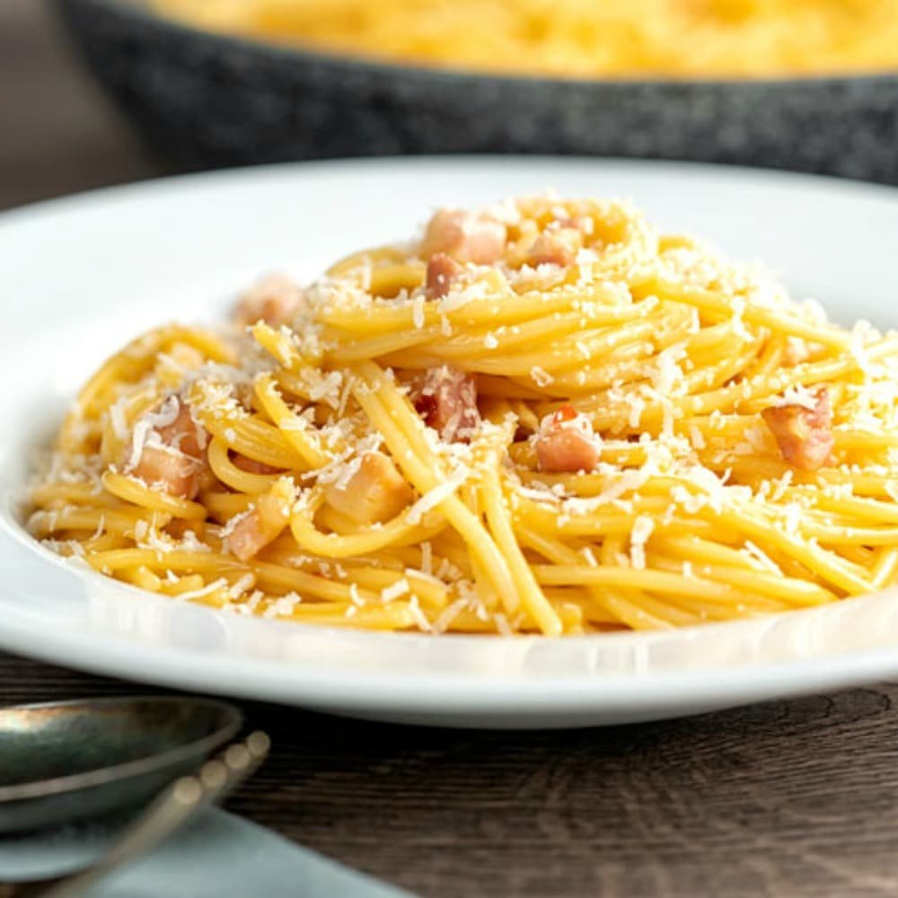

Italian Carbonara Recipe
Home

Description
This Authentic Spaghetti Carbonara is made with just 4 ingredients, egg yolks, black pepper, pecorino and guanciale and of course Spaghetti. Made in 15 minutes, this creamy authentic pasta recipe will make you think you are in Rome.
Ingredients
- 3 cups cooked spaghetti (about 6 ounces dry) (600 grams cooked or 300 grams dry)
- 4 large egg yolks
- 1 cup pecorino freshly grated
- ½-1 teaspoon black pepper (freshly ground if possible)
- 2 tablespoons olive oil
- ½-¾ cup guanciale
- 2-3 tablespoons pecorino freshly grated
Steps
- In a large pot boil the water, once the water is at a roaring boil add a little salt and the spaghetti, stir and cook until a little bit more than al dente.
- In a small/medium bowl beat until well combined the egg yolks, add the grated pecorino and pepper, beat to combine. Just before adding to the pan add 1/3 – 1/2 cup (80-120ml) of hot pasta water and mix to combine well.
- Slice the guanciale into short thin strips. In a large pan add the olive oil and guanciale, cook on medium heat until desired doneness, I like it on the crunchy side, the Italian not so much. Remove the guanciale to a clean plate. Do not remove the oil (& fat) from the pan.
- On medium/high heat, add the al dente pasta to the pan, and a 1/3-1/2 cup (80-120 ml) of hot pasta water and stir to combine, remove the pan from the heat and add the egg mixture and quickly combine, add 1/3 -1/2 cup of hot (not boiling) pasta water and toss continually until well combined and creamy. Add the guanciale and gently mix. Serve immediately topped with freshly grated pecorino and black pepper. Enjoy!